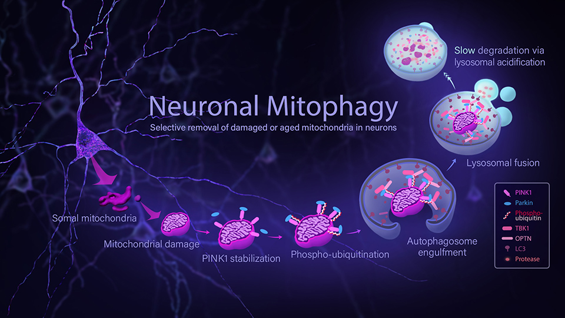
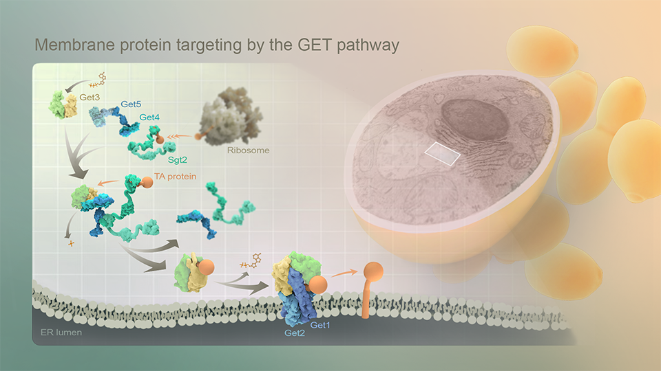
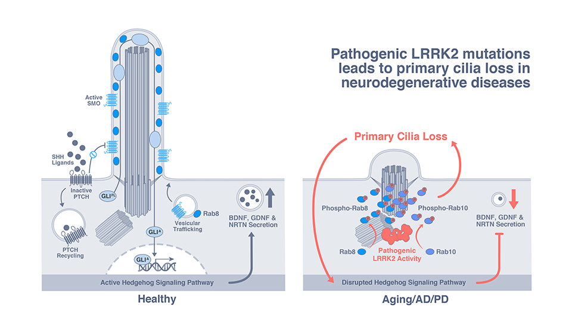
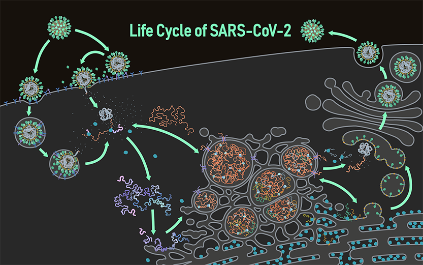
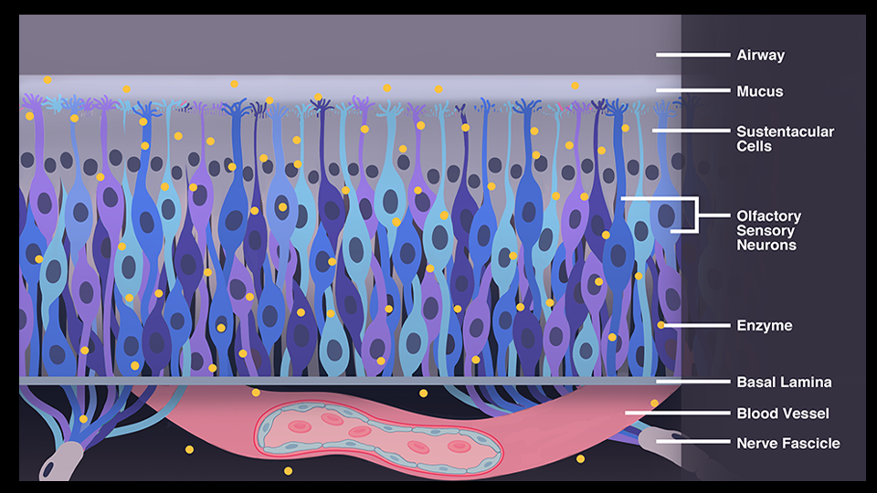
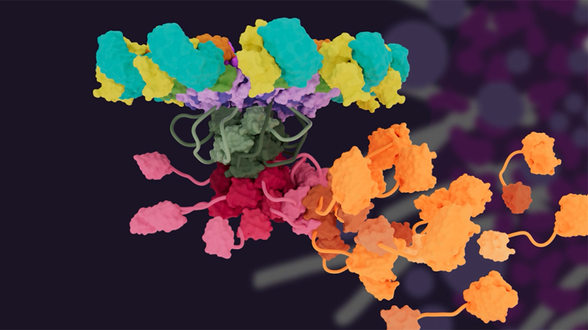
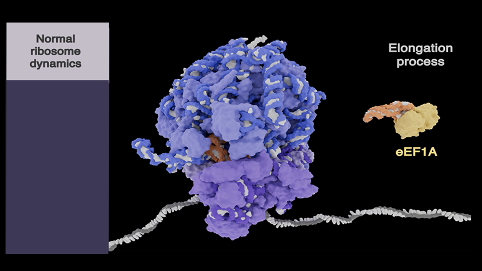

Hi, I am a scientific animator and visual communicator. My research investigates how scientific visualization can integrate fragmented biomedical evidence into coherent, explorable models and narratives of biological mechanisms. I also create high-fidelity biomedical visualizations, molecular /cellular animations, and data-driven narratives using Maya, Blender, and Adobe software.







I received my PhD in Evolutionary Genetics from the University of Otago and my MSc in Biomedical Visualization from the University of Illinois Chicago. I then joined the Animation Lab at the University of Utah as a Postdoctoral Fellow and later served as a faculty member at the University of Science and Technology of China. Now I am a Research Assistant Professor in the Animation Lab.